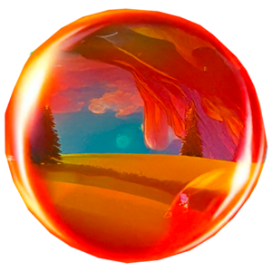
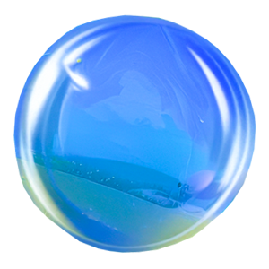
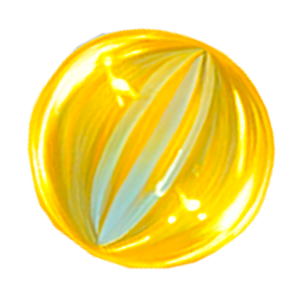

PÕKS
Punane, energiline ja rõõmus
Oskused:
Taustalugu:
Põks sündis Orbioni esimeses valgusvihus ja õppis varakult, kuidas maailma lõbustada. Ta on alati uudishimulik ja valmis hüppama iga uue seikluse ees.
Roll maailmas:
Põks on Orbioni energiaallikas – ta toob maailma rõõmu ja optimismi, ergutab teisi mullikesi uurima ja mängima.
HELK
Sinine, rahulik ja peegeldav
Oskused:
Taustalugu:
Helk sündis järve ääres, kus valgus ja vesi lõid kauneid peegeldusi. Ta on alati rahulik ja analüütiline, armastab vaadelda maailma ilu ja tasakaalu.
Roll maailmas:
Helk on Orbioni tark ja rahulik nõustaja, kes aitab säilitada tasakaalu ning õpetab teisi mullikesi mõtlema enne tegutsemist.
SÄDE
Kuldne, särav ja optimistlik
Oskused:
Taustalugu:
Säde sündis päikesekiirest ja armastab avastada maailma imelisi kohti. Ta on alati positiivne ja inspireerib teisi julgeid otsuseid tegema.
Roll maailmas
Säde on Orbioni uurija ja unistaja – tema julgus ja optimism viivad mullid uutele seiklustele ja avastustele.